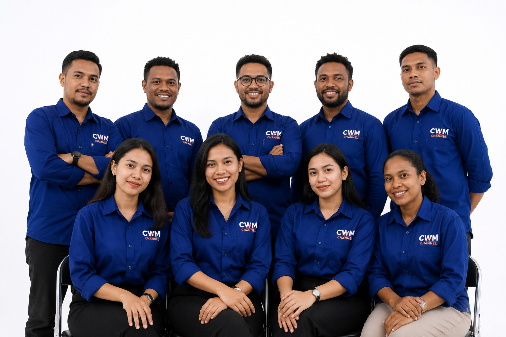

Perusahaan media penyiaran yang menghadirkan informasi, hiburan, dan edukasi terpercaya bagi masyarakat Papua Barat Daya.
Mengenal perusahaan media lokal Papua Barat Daya

PT Cendrawasih Wiputra Mandiri (CWM) merupakan perusahaan media penyiaran yang berkomitmen memberikan informasi yang akurat, terpercaya, dan berkualitas bagi masyarakat.
Melalui CWM Channel, perusahaan menghadirkan program berita, hiburan, edukasi, dan informasi publik dengan memanfaatkan perkembangan teknologi digital.
Lokasi pusat operasional CWM Channel di Kota Sorong, Papua Barat Daya.
Jl. D. Maninjau No.19,
Rufei, Distrik Sorong Barat,
Kota Sorong,
Papua Barat Daya 98411,
Indonesia.
PT Cendrawasih Wiputra Mandiri
(CWM Channel)
Media Penyiaran, Portal Berita Digital, Informasi Publik, dan Konten Kreatif.
Membangun media yang dekat dengan masyarakat dan memberikan informasi berkualitas.
Menjadi perusahaan media penyiaran terpercaya, inovatif, dan terdepan dalam memberikan informasi berkualitas bagi masyarakat Papua Barat Daya dan Indonesia.
Telah menggunakan dan berlangganan layanan CWM sebagai sumber informasi, hiburan, dan program berkualitas.